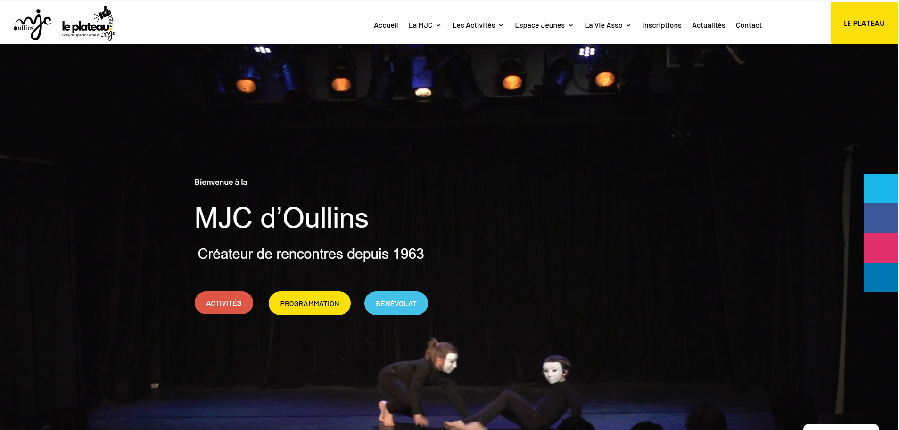

Stage de 1ère année
Durant ce stage, j’ai découvert le fonctionnement d’une agence web spécialisée dans la création et la personnalisation de sites WordPress. J’ai pu participer à plusieurs missions concrètes liées à l’intégration, à la mise en page et à l’adaptation de contenus web.
Nom
Elixir Creation
Secteur
Agence web spécialisée WordPress / Divi
Adresse
50 Rue Marchande, 38200 Vienne
Téléphone
06 64 10 88 76
Site web
https://www.elixir-creation.fr
Période
Mai-Juin 2025
Ce stage m’a permis de découvrir l’environnement professionnel d’une agence web et d’observer la réalisation de projets concrets pour des clients.
J’ai principalement travaillé sur WordPress avec l’outil Divi, en participant à l’intégration de contenus, à la personnalisation de pages et à l’adaptation du design.
Cette expérience m’a permis de renforcer mes bases en développement web, en responsive design et en compréhension des besoins clients.
Réalisation d’un site vitrine complet pour la MJC d’Oullins, permettant de présenter les activités proposées et les informations de l’établissement.
Réalisation de modifications sur plusieurs sites web existants, principalement sur l’intégration de contenus et la mise à jour de sections.
Ce premier stage m’a permis de découvrir le fonctionnement d’une agence web et de participer à la réalisation d’un projet concret de grande ampleur. J’ai rapidement pris en main WordPress et le constructeur Divi, ce qui m’a permis de développer mes compétences en intégration web et en mise en page responsive. Cette expérience m’a également permis de découvrir le travail en équipe et l’organisation d’un projet professionnel, tout en renforçant ma rigueur et mon autonomie.
